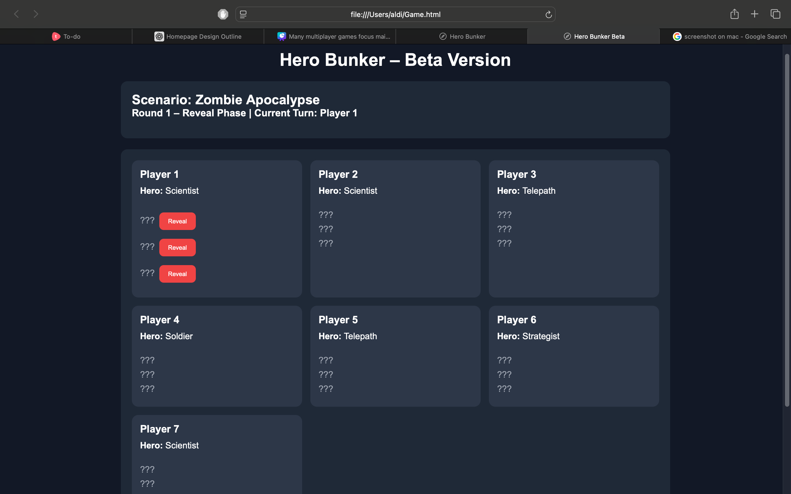
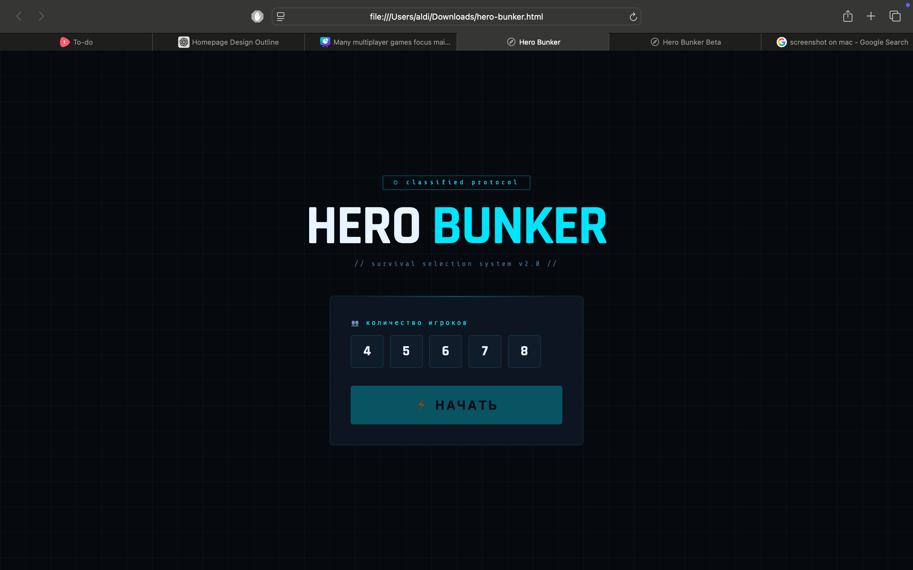
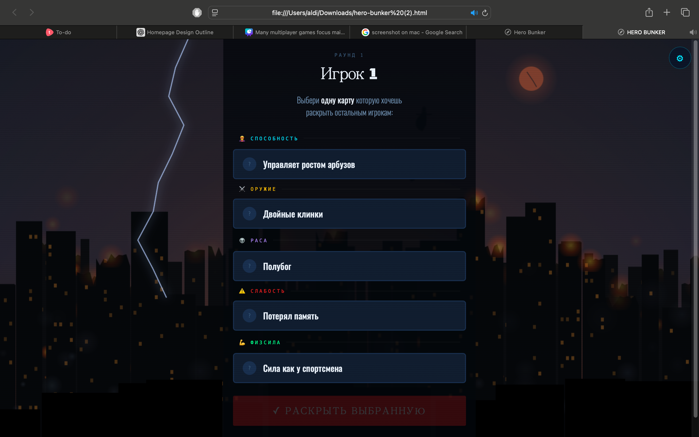

Hero Bunker
A Strategic Superhero Role-Playing Survival Game
Explore ProjectA Strategic Superhero Role-Playing Survival Game
Explore ProjectHero Bunker is a digital role-playing strategy game inspired by the board game Bunker. Players take on the roles of superheroes trapped in a global catastrophe where only a limited number of people can survive inside a bunker.
Each player receives unique powers, hidden traits, and personal weaknesses. Through communication, strategy, and debate, players must convince others why they deserve to survive while questioning the usefulness of everyone else.
The game combines critical thinking, teamwork, and psychological strategy into an interactive digital experience.
Many modern games focus only on fast reactions and repetitive gameplay. Hero Bunker focuses on communication, decision-making, and strategic thinking.
The project was created to encourage players to think critically, analyze situations under pressure, and learn how teamwork affects survival.
The superhero theme makes the game engaging and accessible while still maintaining educational and strategic value.
Players join the game and receive a superhero character with special abilities and hidden traits.
The game generates a random global disaster such as a zombie outbreak or nuclear apocalypse.
Each round, players reveal one hidden trait one by one, changing strategies and increasing tension.
Players debate who deserves to survive based on their usefulness, powers, and revealed traits.
At the end of every round, one player is eliminated until only the final survivors remain.
The final bunker team is evaluated based on balance, survival potential, and teamwork.

Players begin with incomplete information, creating uncertainty and strategic decision-making.
Each superhero has unique strengths, weaknesses, and abilities.
Gameplay progresses through multiple rounds with escalating tension and eliminations.
Players influence outcomes through persuasion, logic, and communication.
Sponsor: Ahmet Daulet (Educator)
The sponsor explained that role-playing and strategy games can help students develop communication, responsibility, and teamwork skills.
One of the most important points of feedback was to ensure that the game remains balanced and understandable while still encouraging thoughtful discussion and decision-making.
The sponsor also emphasized that the game should maintain educational value rather than focusing only on entertainment.
This section demonstrates how Hero Bunker evolved from Alpha to Beta and finally into the completed project.

The Alpha version focused on the core gameplay idea. At this stage, the game had basic role assignment, simple discussions, and an early elimination system.

The Beta version introduced round-based gameplay, hidden trait reveals, improved balancing, and a significantly better user interface.

The Final version combines strategic gameplay, visual polish, and educational value into a complete experience.
function startGame(){
AUDIO.unlock(); AUDIO.click();
const count=window._n;
players=[];
for(let i=0;i{
traits[c]=ri(DATA.pools.ru[c].length);
rev[c]=false;
});
players.push({name:`${t('stWait').includes('wait')?'Player':'Игрок'} ${i+1}`, traits, revealed:rev, revealedThisRound:false, eliminated:false});
}
// Fix player name based on language
players.forEach((p,i)=>{ p.name=lang==='en'?`Player ${i+1}`:`Игрок ${i+1}`; });
threatIdx=ri(DATA.threats.ru.length);
round=1; turnIdx=0;
showThreat();
}
The project evolved from a simple prototype into a structured and visually engaging experience.
The largest improvement from Alpha to Final was the gameplay structure and user experience. The addition of round-based eliminations and hidden trait reveals created more tension and strategic depth.
The most useful feedback came from sponsor and user testing because it helped improve game balance and simplify the rules.
If development continued, future improvements would include multiplayer support, advanced animations, and expanded scenarios.
Role: Programmer
Responsible for coding the website, game structure, and functionality.
Role: Designer / Researcher
Responsible for visual identity, research, and gameplay analysis.
| Week | Task |
|---|---|
| 1 | Research and planning |
| 2 | Prototype and UI design |
| 3 | Gameplay and website development |
| 4 | Testing and final improvements |